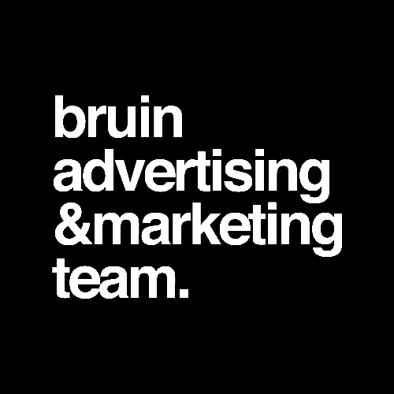
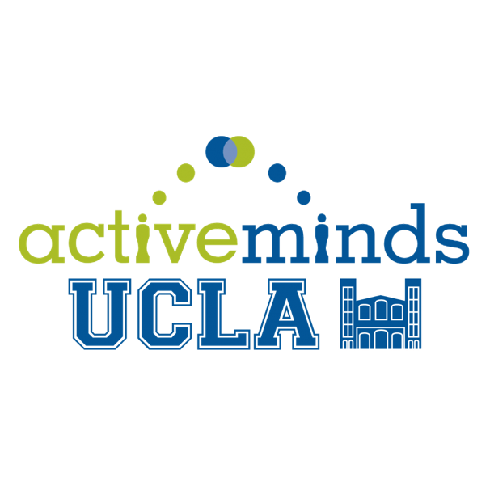

Experience.
Consulting Summer Scholar – Business Technology (2017)

Consumer Marketing & Analytics Intern (2016)
Consumer Marketing & Design Intern (2015)

Strategic Planning Director (2017-), Strategic Planner (2016)
Marketing Strategy Consultant (2015-)
Undergraduate Representative (2016-)

Marketing Director (2015-)
Web Director (2016-)